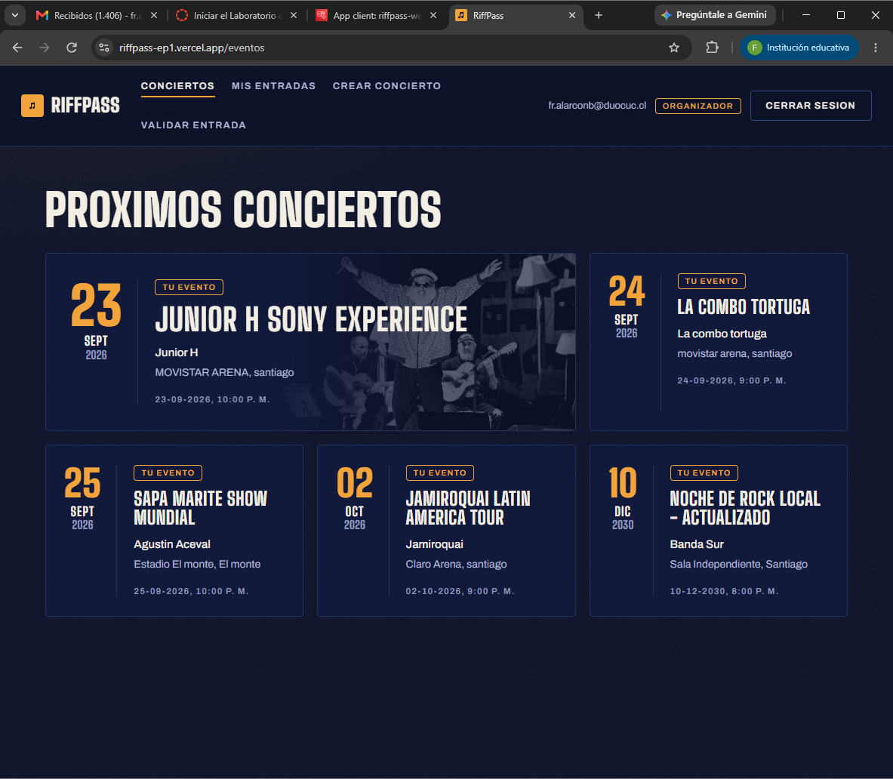
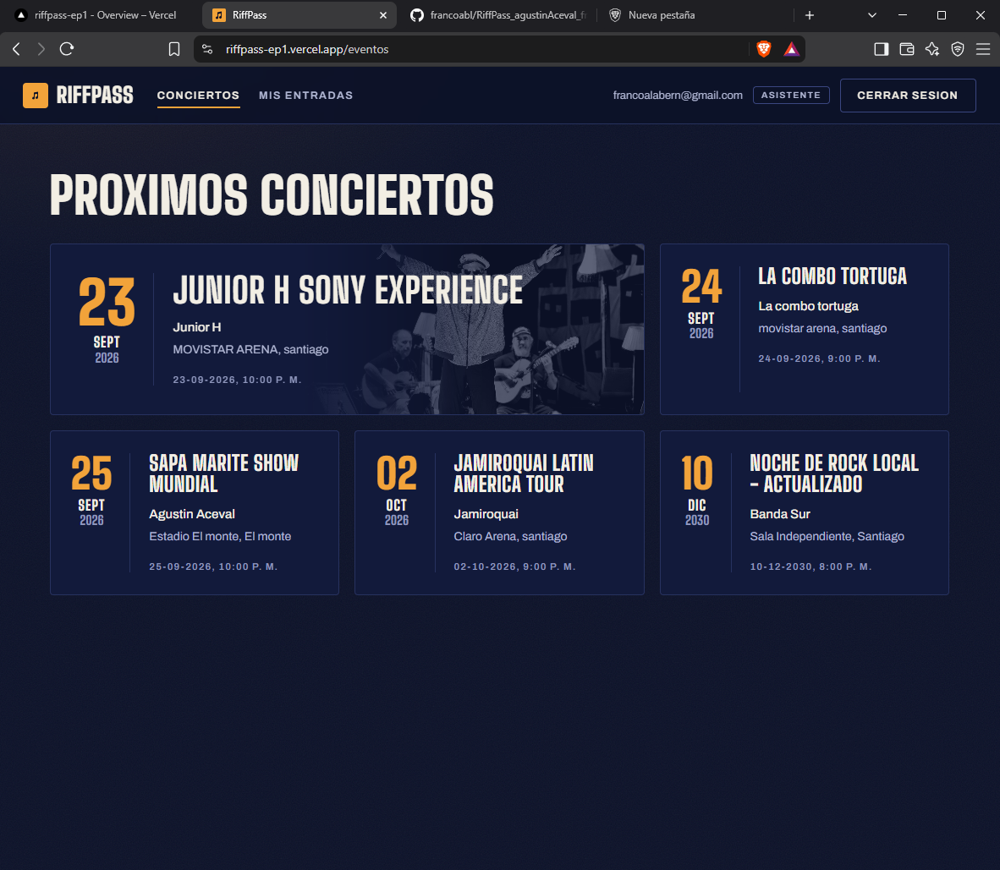
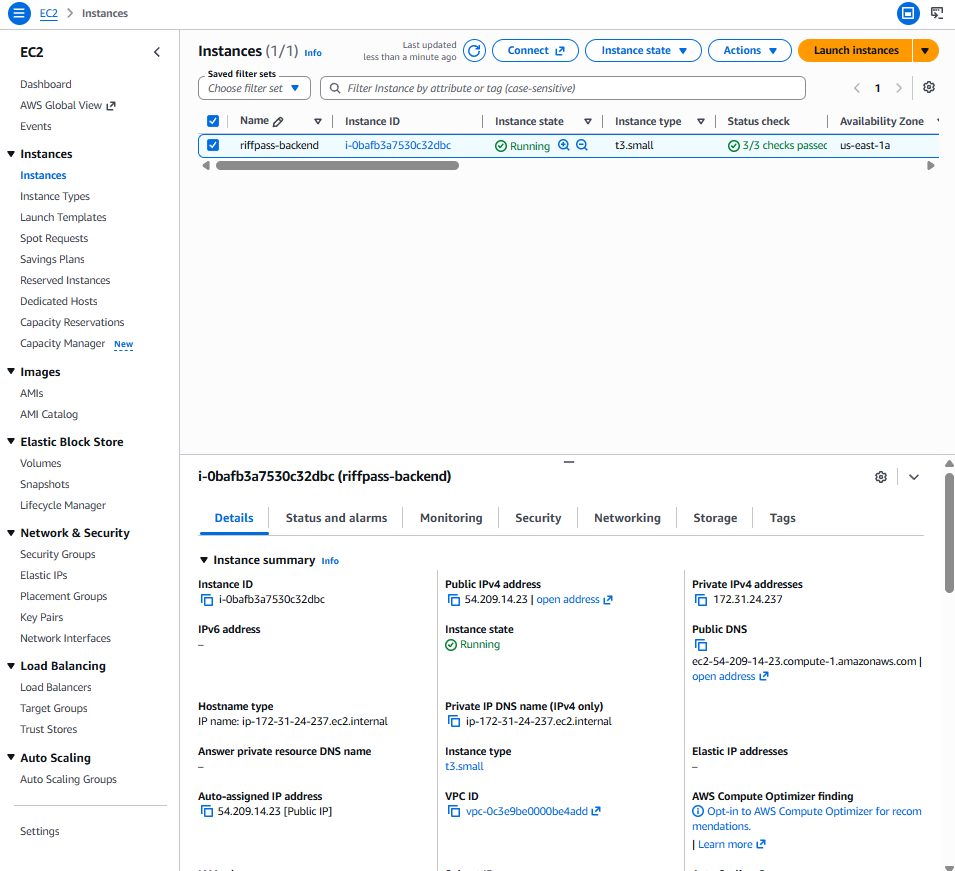
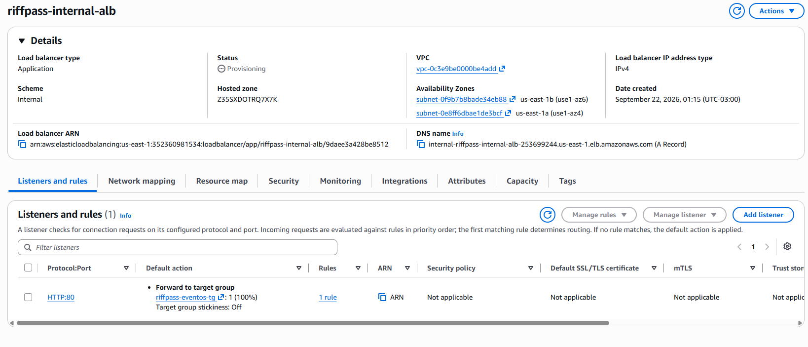
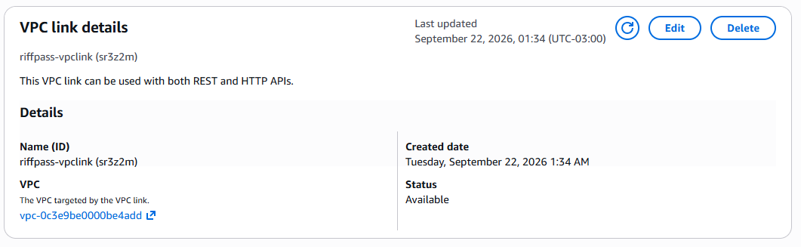
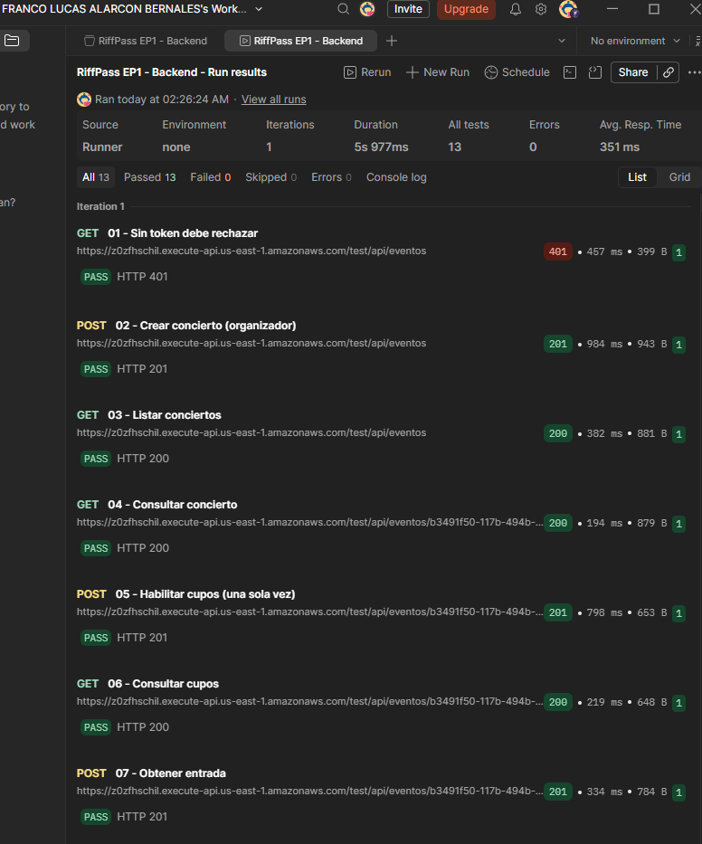
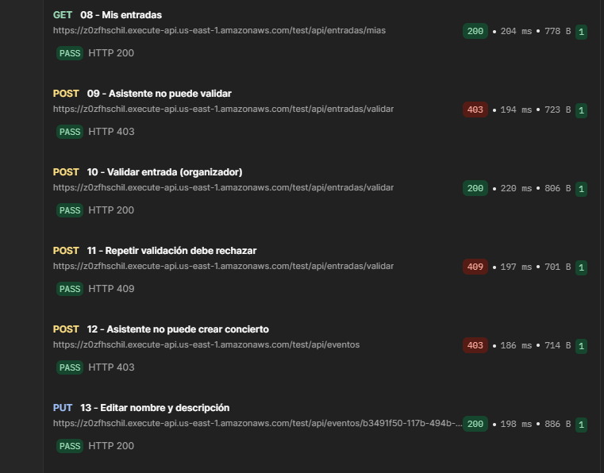

Puerto 8081 · Base riffpass_eventos
Eventos
- Crea, lista y consulta conciertos.
- Edita nombre y descripción.
- Guarda al propietario mediante
sub. - Protege la edición de eventos ajenos.

RiffPass administra conciertos y entradas gratuitas con dos responsables claramente separados.
Consulta conciertos, obtiene una entrada y revisa únicamente sus entradas.
Publica conciertos, habilita cupos y valida accesos de sus propios eventos.
El organizador crea un concierto futuro.
Define la capacidad una sola vez.
El asistente recibe un código único.
El dueño del evento confirma el acceso.
Un segundo uso devuelve conflicto 409.
La identidad siempre proviene del token. El navegador nunca decide quién es el propietario o titular.
token_use y client_id.sub con el propietario.sub.Entradas consulta a Eventos por HTTP y reenvía el mismo access token. No existen consultas SQL entre bases.
Serializa las operaciones sobre el inventario.
Incrementa emitidas y crea la entrada como una sola operación.
Evitan duplicados y que emitidas supere capacidad.
Solo una petición cambia EMITIDA a UTILIZADA.


Authorization Code con PKCE obtiene un access token con los cuatro scopes personalizados.
apiFetch adjunta el Bearer token, renueva una vez ante 401 y traduce Problem Details.





Login, logout, rutas protegidas, access token, apiFetch, roles, scopes y consumo real de Gateway.
Firma, issuer, vigencia, cliente esperado, roles, propiedad y códigos HTTP adecuados.
Frontend compilable
React modular con vistas funcionales.
Varios microservicios
Dos JAR Spring Boot desplegados.
Persistencia cloud
Entidades, repositorios, Flyway y PostgreSQL RDS.
Entrega técnica
GitHub, archivos .gitignore y documentación reproducible.
<Authenticator>.La ronda de preguntas conserva cinco minutos dentro del máximo total de 20.